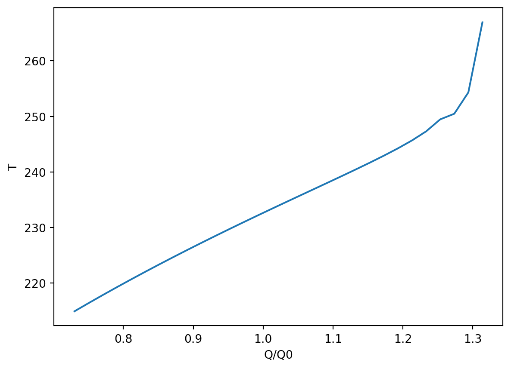

This material has not yet been finalised and is still under construction. Once it is covered in lectures, this banner will be replaced.
Reference
This chapter follows some developments in Chap. 1 of (Kaper and Engler 2013) though we shall go into much greater detail on some numerical and analytical tools.
We have done a preliminary steady-state analysis of \[
\frac{1}{4}Q (1 - a(T)) - \sigma \gamma T^4,
\] but we would like to better understand how these steady-states may change depending on the parameters. More specifically, we would like to design some numerical routines that would allow us to (smartly!) solve for the roots of the above equation as the parameters are varied.
12.1 Poor person’s numerical continuation
Suppose that we are interested in studying how the steady-states (up to three) change as \(Q\) changes. Then we are interested in producing a diagram of \(Q\) vs. \(T\). The basic idea is to start with an initial solution at some value of \(Q\), increment \(Q\), then solve for the next value using the previous value as a guess. This involves the following pseudocode:
Poor person’s numerical continuation
1. Input guess T0, f, df, parameter Q1
a. Call Newton's method via Newton(f, df, T0, Q1)
b. Obtain a preliminary solution (T1, Q1)
2. Increment Q1 = Q1 + dQ
a. Call Newton's method via Newton(f, df, T1, Q1)
b. Obtain a new solution (T1, Q1)
3. Repeat 2 until we reach a desired Q value
Unfortunately this does not work as well as we would like.
import numpy as npimport matplotlib.pyplot as pltdef Newton(f, df, x, maxiter=100, tol=1e-12, display=0): i =0while (abs(f(x) -0) > tol) and (i < maxiter): err = f(x) x = x - err / df(x)if display ==1:print("f(x) = ", np.abs(err), ", x = ", x) i = i +1return x, errsigma =5.67e-8gamma =0.62a =lambda T: 0.5-0.2*np.tanh((T -265)/10)da =lambda T: -0.2*1/np.cosh((T-265)/10)**2/10Q0 =1370Qmat = np.linspace(1000, 1800, 30)Tmat =0*Qmatx =220for i, Q inenumerate(Qmat): f =lambda T: Q/4*(1-a(T)) - sigma*gamma*T**4 df =lambda T: -Q/4*da(T) -4*sigma*gamma*T**3 x, err = Newton(f, df, x, 10, 1e-8, 0)if err >1e-4:print("Careful no convergence at Q/Q0 = ", Q/Q0) Tmat[i] = xplt.plot(Qmat/1370, Tmat);plt.xlabel('Q/Q0');plt.ylabel('T');
Careful no convergence at Q/Q0 = 1.2131890259249938
Careful no convergence at Q/Q0 = 1.2735967782532092
Careful no convergence at Q/Q0 = 1.2937326956959476
Careful no convergence at Q/Q0 = 1.313868613138686

Above, we have scaled \(Q\) with the reference value of \(Q_0 = 1370\). The problem is that somewhere within \(1.2 < Q/Q_0 < 1.3\), two of the steady-state solutions merge.
12.2 Arclength continuation
12.3 Budyoko’s model
(Sec. 2.8 of Kapler & Engler)
Prevously we used the assumption that the outgoing radiation follows the Stefan-Boltzmann law (Equation 3.3). Based on observational data, there seems to be a simpler linear law, first suggested by Budyko (Budyko 1969). The law can be written as \[
E_\text{out} = A + BT,
\tag{12.1}\] where \(A\) and \(B\) will vary with location and climate. For instance, for the Northern Hemisphere, (Kaper and Engler 2013) gives the values of \(A = 203.3\text{Wm}^{-2}\) and \(B = 2.09 \text{Wm}^{-2}\text{deg}^{-1}\) and where temperature is measured in degrees Celcius. One can interpret this as a linear expansion of the Stefan Boltzmann law about \(T = 0\) (after which similar values of \(A\) and \(B\) are derived).
There is an interesting bifurcation analysis that can be done in studying the steady-state solutions when \(Q/Q_0\) is varied. Students can be asked to construct the bifurcation diagram of \(Q/Q_0\) vs. temperature.
Budyko, Mikhail I. 1969. “The Effect of Solar Radiation Variations on the Climate of the Earth.”Tellus 21 (5): 611–19.
Kaper, Hans, and Hans Engler. 2013. Mathematics and Climate. SIAM.